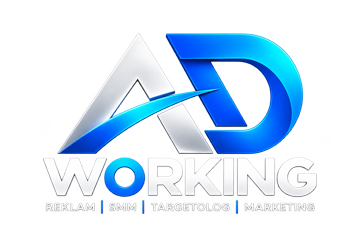

Premiere Pro plagini · v1.1.0Premiere Pro üçün Azərbaycan dilində avtomatik altyazı. Klipi seç, düyməyə bas: səs yazıya çevrilir, stilli altyazı birbaşa timeline-a düşür.
Almaq üçün yazın, quraşdırma faylını WhatsApp-da göndəririk. Açılmasa: 070 224 77 24 · Windows 10/11 · Premiere Pro 2022 və yeni
Klipin səsi Whisper modeli ilə Azərbaycan dilində mətnə çevrilir, vaxt kodlu SRT yaranır və sekansa altyazı treki kimi qoyulur.
Timeline-da seçilmiş kliplər, A1 trekindəki bütün kliplər və ya kompüterdən istənilən video/audio fayl.
Adları, şəhərləri, brendləri vergüllə yazın (Bakı, Xırdalan, Kapital Bank). Model onları düzgün yazır.
Şrift, rəng, gradient, kontur, kölgə, neon parıltı, 3D dərinlik, fon qutusu, animasiya və danışığa uyğun aktiv söz effekti.
Stilli altyazı ProRes 4444 şəffaf fonlu video kimi render olunur və avtomatik boş video trekə (V2, V3…) qoyulur.
"Mətn" bölməsində istənilən sətri dəyiş və ya sil. Vaxta klikləyəndə timeline həmin yerə keçir.
WhatsApp-da aldığınız AzAltyazi-Premiere.zip faylının üzərində sağ klik → Extract All (Hamısını çıxar).
Quraşdırma vaxtı Premiere açıq olmamalıdır.
Çıxarılmış qovluqda install.bat faylına iki dəfə klikləyin. Windows "Windows protected your PC" yazsa: More info → Run anyway. NVIDIA videokartınız varsa, GPU versiyası soruşulacaq: B yazın.
Pəncərə model soruşacaq. Rəqəmi yazıb Enter basın (ikisi üçün 1,2):
"Quraşdırma tamamlandı!" yazısını görəndə pəncərəni bağlayın.
Premiere Pro → Window → Extensions → AZ Altyazı. Yeni versiyalarda: Window → Extensions (Legacy) → AZ Altyazı.
Klipi seçin və "Altyazı yarat" basın. Altyazı sekansda ayrıca Subtitles treki kimi görünür; SRT faylı layihənin yanındakı Altyazilar qovluğunda saxlanılır.
"Stil" bölməsində 22 stildən birini seçin, istəsəniz dəyişib "Yadda saxla" ilə saxlayın. "Stilli altyazını render et" basın: şəffaf video klipin üstünə qoyulur.
%APPDATA%\Adobe\CEP\extensions\AzAltyazi\bin%APPDATA%\Adobe\CEP\extensions\AzAltyaziQiymət: 30 AZN. WhatsApp və ya Instagram: @ad_working.az